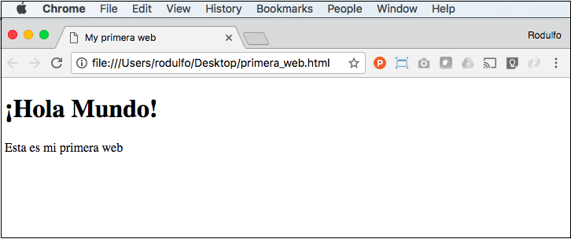

¿Qué es HTML?
El lenguaje de marcado de hipertexto, o HTML (HyperText Markup Language) por sus siglas en inglés , es el estándar para armar documentos que serán desplegados en un sitio web en el navegador. HTML es el lenguaje utilizado para crear la estructura de un sitio web. Para crear este sitio, se empieza creando un documento en formato HTML.
Pregunta: ¿Qué es HTML?
Respuesta
Un documento HTML simple se ve así:
Al abrir este mismo documento HTML en un navegador (como Chrome), se ve lo siguiente:
El navegador "lee" el archivo HTML (el texto y las etiquetas que están adentro) y las presenta según las reglas
del
lenguaje. Por ejemplo, los textos que están dentro de las etiquetas <h1> son
considerados
encabezados o titulares,
mientras que los textos dentro de las etiquetas <p> son considerados párrafos. Por eso, el
texto ¡Hola Mundo! se
visualiza mucho más grande que el texto Esta es mi primera web.
Explicación del ejemplo:
- La etiqueta
<!DOCTYPE html>define que este es un documento es HTML5. - El elemento
<html>es el elemento raíz de una página HTML. - El elemento
<head>contiene meta información acerca de la página HTML. - El elemento
<title>especifica un título para la página HTML. - El elemento
<body>define el cuerpo del documento, y contiene todos los elementos visibles, tales como encabezados, párrafos, imágenes, hyperlinks, tablas, listas, etc. - El elemento
<h1>define el encabezado principal. - El elemento
<p>define un párrafo.
¿Qué es un Elemento HTML?
Un elemento HTML está definido por una una etiqueta de inicio, algún contenido, y una etiqueta de cierre:
El elemento HTML es todo lo que está entre la etiqueta de inicio y la etiqueta de cierre:
Estructura de una página HTML
El contenido dentro de la sección <body> se muestra en el browser. El contenido dentro del elemento <title> se muestra en la barra de título del browser.
2
3
4
JavaScript es un lenguaje interpretado. La computadora no entiende JavaScript. Necesita algo para interpretar el código y convertirlo en algo que entienda; por lo tanto, es un lenguaje interpretado. Las computadoras entienden solo el código de máquina, que es esencialmente una cadena de números binarios (es decir, una cadena de ceros y unos). El código en JavaScript es una especie de guión o "script" que un intérprete, en este caso el navegador, va ejecutando línea por línea. A medida que el navegador recorre el JavaScript, lo pasa a un programa especial llamado intérprete, que convierte el JavaScript en el código de máquina que la computadora comprende. Es como tener un traductor que traduce en el momento del inglés al español, por ejemplo. Lo importante a tener en cuenta es que la conversión del JavaScript ocurre en el momento en que se ejecuta el código; debe repetirse cada vez que esto sucede. JavaScript no es el único lenguaje interpretado; existen otros como PHP y Ruby.
En cambio, en un lenguaje compilado, el programa desarrollado debe pasar por un punto intermedio donde se "compila" o traduce desde el lenguaje utilizado para escribirlo a un lenguaje que la máquina pueda ejecutar. El código del programa se convierte a código de máquina antes de ejecutarse, y esta conversión sólo se hace una vez. El programador utiliza un compilador para convertir el código que escribió a código de máquina, y este código de máquina es ejecutado por el usuario del programa. Los lenguajes C#, Java y muchos otros son compilados. Es como traducir al inglés lo que dice un documento en español. A menos que se cambie el original, el documento traducido se puede seguir usando sin necesidad de volver a traducirlo. JavaScript no necesita ser compilado. Para evitar una posible confusión, es bueno aclarar que JavaScript no es la versión script del lenguaje Java. Aunque comparten el nombre no comparten nada más. JavaScript es mucho más fácil de aprender y usar que Java, pero aún así es sorprendentemente poderoso.
JavaScript es un lenguaje de programación dinámico. Permite realizar modificaciones en tiempo de ejecución, mientras se está ejecutando el programa. Esto se debe a que JavaScript es un lenguaje interpretado.
Características que hacen de JavaScript un lenguaje dinámico:
- Tipado débil y dinámico: JavaScript no requiere que se declare el tipo de dato de una variable antes de utilizarla. El tipo de dato de una variable puede cambiar en cualquier momento durante la ejecución del programa.
- Permite crear objetos y funciones en tiempo de ejecución: no es necesario definirlos antes de la ejecución del programa.
- Modificación del DOM: JavaScript es utilizado para manipular el Document Object Model (DOM), que es la estructura del documento HTML. Esto permite modificar el contenido y la apariencia de una página web en tiempo real, en respuesta a la interacción del usuario.
JavaScript es muy fácil de implementar porque está integrado con HTML. Está diseñado para crear aplicaciones centradas en la red. Es abierto y multiplataforma. La dinamicidad de JavaScript permite a los desarrolladores crear aplicaciones interactivas y flexibles que pueden adaptarse a las necesidades del usuario en tiempo real. Sin embargo, también puede hacer que el código sea más difícil de mantener y depurar si no se tiene cuidado al realizar modificaciones en tiempo de ejecución.
Los programas en JavaScript se llaman "scripts", tienen la extensión .js y pueden llamarse desde el HTML o puede escribirse directamente el código en el HTML y ejecutarse automáticamente a medida que se carga la página. Los scripts se crean y ejecutan como texto sin formato. No necesitan preparación o compilación especial para ejecutarse. Otra cosa son los frameworks de programación basados en JavaScript como Angular, React, o Vue que si son necesariamente compilados para que el navegador pueda interpretarlos.
Principales cualidades de JavaScript
- Velocidad: 🏃 tiende a ser muy rápido. Se ejecuta inmediatamente en el navegador; en tanto no requiera recursos externos, no tiene permitido retrasarse por llamados del servidor backend.
- Popularidad: 🏆 está en todos lados y se espera que su popularidad siga en alza. Con la llegada de Node.js, se ha incrementado su uso en el back-end y por lo tanto incorporado cada vez con más frecuencia en los tech stack de todo tipo de startups y compañías.
- Server Load: 💻 trabaja del lado del cliente lo que reduce la demanda de servidores en general.
- Compatibilidad: 🔁 puede ser usado en cualquier página web y en diferentes tipos de aplicaciones gracias al soporte que ofrecen otros lenguajes como Pearl y PHP.
- Simplicidad 💆♀️ en relación a otros lenguajes de programación igualmente populares, es relativamente sencillo de aprender.
- Versatilidad 🚀Hay muchos métodos para usar JavaScript mediante servidores Node.js. En Node.js con Express, se puede usar un documento database como MongoDB, y usar JavaScript en el frontend para clientes. JavaScript es el único lenguaje que permite trabajar en modo Full Stack.
Isomorfismo
JavaScript es capaz de ejecutarse en las tres capas de una app: FrontEnd (JS), BackEnd (Node.js) y Persistencia de datos (MongoDB, Couch DB, Firebase, etc).
Una aplicación universal o isomórfica es aquella que comparte todo (o casi todo) su código entre el cliente y el servidor. Si tenemos una función como esta:
Este código es universal ya que podemos usarlo tanto en un navegador (cliente) como en Node.js (servidor), entonces en vez de escribir esta función dos veces, podemos entonces compartirla entre ambos entornos de ejecución.
Históricamente el frontend se escribió con JS y el backend con otros lenguajes como Python, pero gracias a Node.js fue posible empezar a compartir código entre servidor y cliente. Esto hizo que mucho código que se duplicaba (como el manejo de rutas) ahora es posible escribirlo una vez y usarlo en dos lugares, lo que se traduce en menores tiempos de desarrollo, debido a que ahora mucho código es compartido y no es necesario reescribir nada.
¡Hola Mundo!
Para escribir código de JavaScript puede usarse un simple editor de textos como el Bloc de Notas o software de uso profesional como Visual Studio Code o Sublime Text.
Incluir los scripts al final del body es una buena práctica que ayuda a mejorar el rendimiento de la página y a garantizar que los elementos visuales se carguen antes de ejecutar el código JavaScript. Garantiza que el navegador primero cargue todo el contenido HTML, CSS e imágenes antes de ejecutar los scripts, lo que reduce el tiempo de carga y mejora la experiencia del usuario. Evita que se bloquee la carga de la página mientras se descargan y ejecutan los scripts, lo que puede generar un efecto de "pantalla en blanco" y dar la impresión de que la página no está funcionando correctamente. Garantiza que la página se cargue de manera rápida y efectiva.